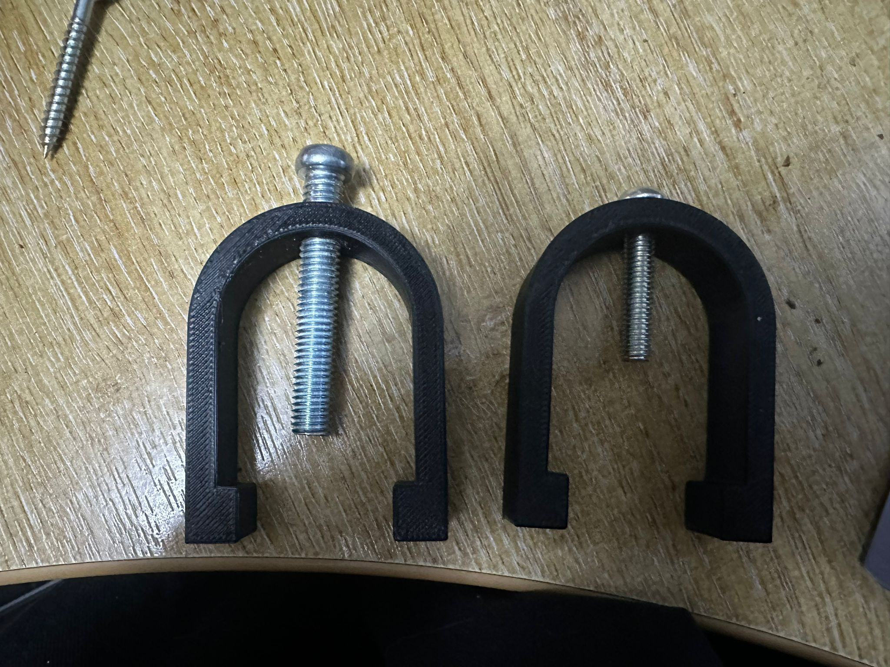
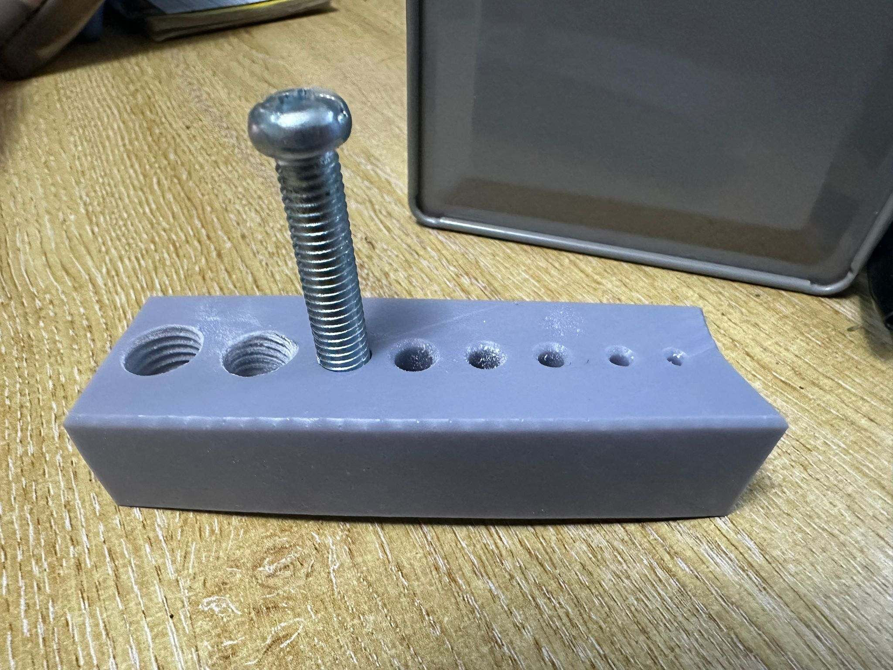

Good thread test results!
I’ve reprinted the vee block clamps slightly thicker to mitigate the warping during inserting the brass inserts, and to give more wall thickness when tapping.
I still need to find something to tap perpendicularly. The plastic is so weak that it’s very easy to thread at a slight angle and cause issues when the screw goes through (it won’t clamp properly).

You can clearly see that the tapped part isn’t perpendicular, so this is my next priority.
As this is unlikely to be the only thing I need to tap… this brings me onto my next test.
Resin threads
The resin printer takes significantly longer to print, process, calibrate, etc — so I haven’t been able to get as much testing done as I’d have liked.
The test I did complete failed due to insufficient supports… again…
However (silver lining), the M12, M10 and M8 holes came out straight enough to actually test tapping.
I mis-tapped the M10 and stripped the start of the thread, so I need to think about that — maybe slightly larger holes than the standard tapping drill size.

You can clearly see it’s warped as hell, but to my pleasant surprise the material is much more rigid and less brittle than I first thought.
I was expecting to struggle tapping into resin, but it worked completely fine — better than FDM in fact. And due to increased material hardness, there’s less likely to be durability issues.
I’m not sure on the exact values — I’ll look into this in the meantime.
Next: resin clamp comparison
Given that the threads worked as good as they did, I need to consider making the vee block clamp out of resin too — it would be good to get a direct comparison between the two.
I’ve started a vee block clamp print on the resin. It should hopefully be finished later this evening; if not, I’ll see what I can do with it tomorrow and do a comparison.
I still need to reinforce the supports on the main vee block to get that printing correctly, but I’m going to do this first since I can get a result quicker — then decide what materials I’m going to use for the final product going forward.